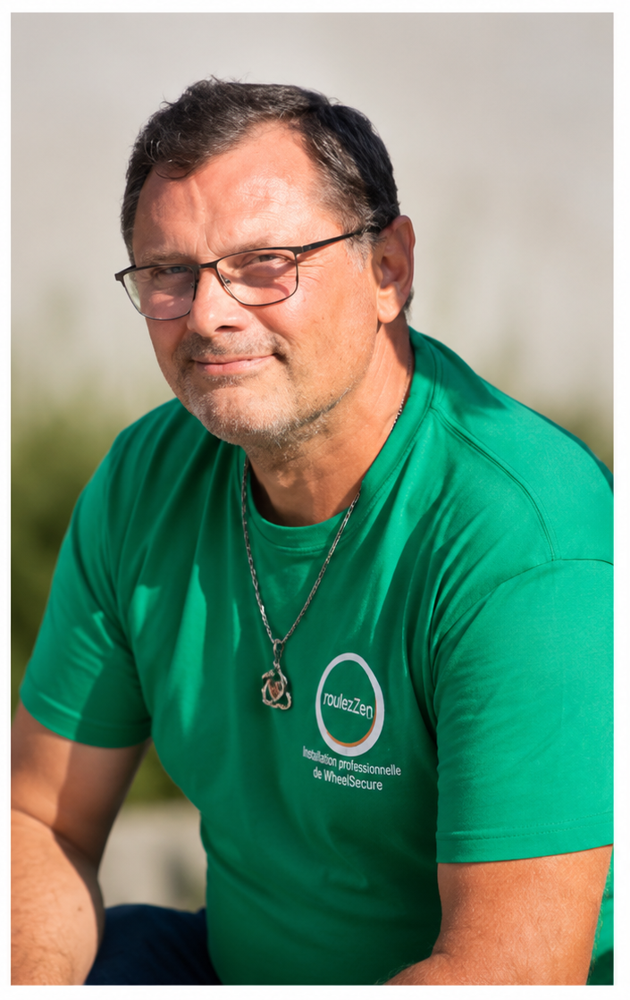
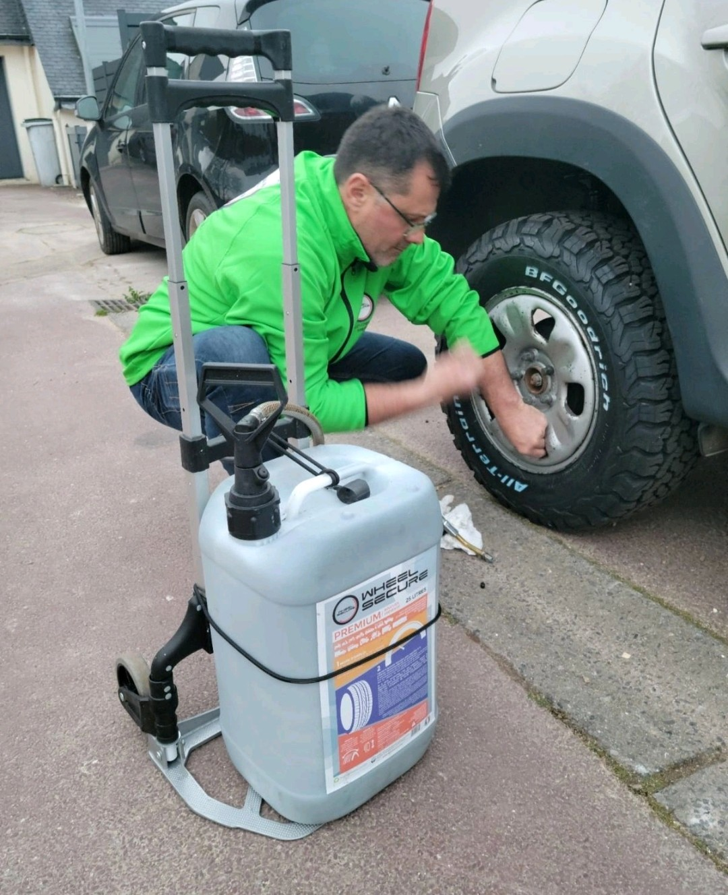
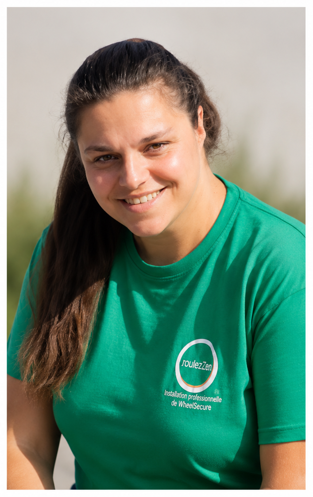
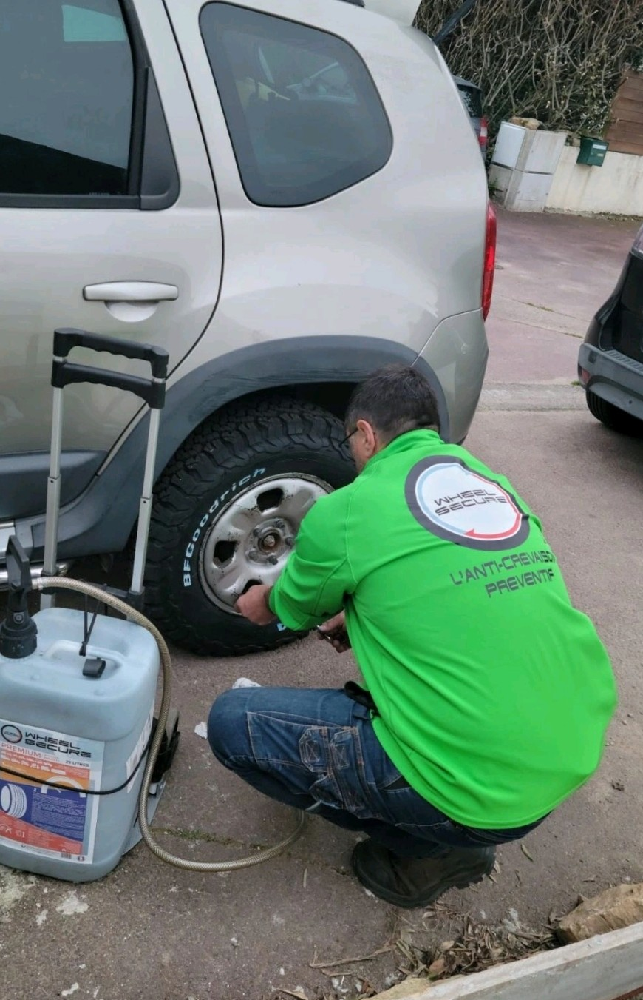
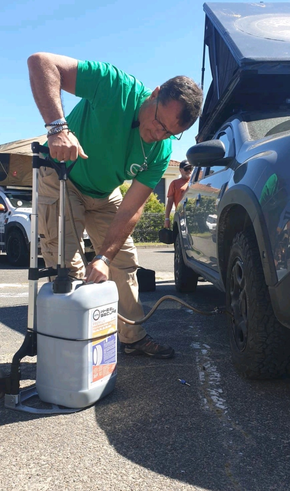
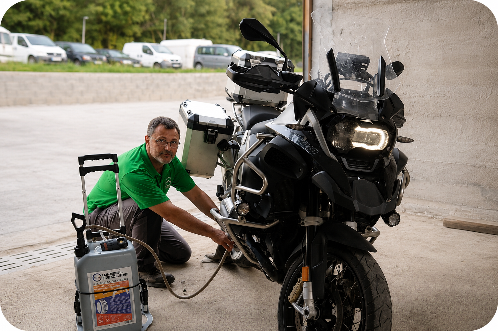

Gilles Gateau
Gérant de l'entreprise RoulezZen- ✔ Déplacement sur site
- ✔ Installation professionnelle
- ✔ Conseils personnalisés
Protégez durablement vos pneumatiques grâce à la technologie WheelSecure. Réduisez les crevaisons, les immobilisations et les coûts d'exploitation.

Réduit les risques de crevaison et assure votre sérénité.
Limite les immobilisations et interruptions.
Moins d'arrêts et moins de réparations.
Solution durable et non corrosive.
Deux interlocuteurs, un seul objectif : vous accompagner partout en Bretagne.



Protégez vos pneus contre les crevaisons avant qu'elles ne surviennent. Disponible en installation professionnelle ou en vente directe, le gel anti-crevaison WheelSecure protège durablement vos pneumatiques contre la plupart des crevaisons de la bande de roulement uniquement et réduit les risques d'immobilisation.
WheelSecure protège efficacement les pneumatiques de nombreux types de véhicules.
Toutes marques et modèles
Fourgons et véhicules professionnels
Camions et transport routier
Tracteurs et matériels agricoles
Engins de chantier et BTP
Protection des deux roues
Quelques exemples d'installations réalisées par RoulezZen en Bretagne.



Nous intervenons directement sur votre site pour installer la protection anti-crevaison WheelSecure sur tous types de véhicules.
📞 07 81 01 11 55
📧 roulezzenbzh@gmail.com
📍 Déplacement sur site dans toute la Bretagne
Demander mon devis gratuit